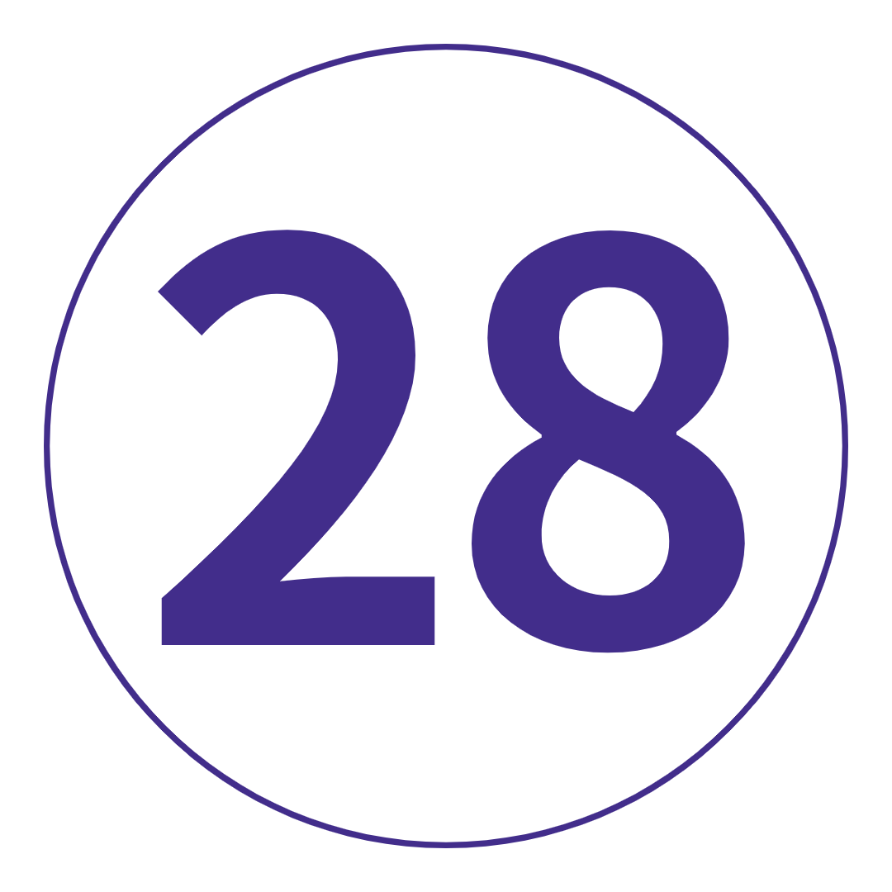

여행 개요
지도
TRIP VIBE = 그룹 활동과 가장 중요한 YOU 시간의 완벽한 조화.
본질적인. 치명적인. 해야 할 일. 필견. 유럽에서 꼭 탐험해야 하는 곳이 무엇이든, 이 빠른 속도로 진행되는 여행에 의존하여 적절한 교육을 받을 수 있습니다. 우리는 로마, 암스테르담, 베니스, 파리... 큰 총을 말하고 있습니다. 그러나 그것이 전부는 아닙니다. 이 여행은 기이한 작은 하이델베르그와 호숫가의 멋진 루체른과 같은 사람들도 함께 합니다. 그리고 당신의 일을 할 수 있는 충분한 자유 시간을 추가합니다. 무슨 믹스죠?
간단한 수학: 2주를 투자하여 특별한 것으로 바꾸십시오.
여행 일정
-
 런던, 영국
당신. 우리. 큰 연기. 더 상징적인 트리오의 이름을 지정해 주시면 기다리겠습니다. 빨간 버스, 빨간 전화 박스, 빨간 속옷(선택 사항)의 집에 오신 것을 환영합니다. 먼저 오늘 저녁에 포함된 저녁 식사에서 그룹의 누가 누구인지 알아보는 시간입니다. 이 혼합 무리와 함께하는 13일 간의 모험을 응원합니다. 해보자!
런던, 영국
당신. 우리. 큰 연기. 더 상징적인 트리오의 이름을 지정해 주시면 기다리겠습니다. 빨간 버스, 빨간 전화 박스, 빨간 속옷(선택 사항)의 집에 오신 것을 환영합니다. 먼저 오늘 저녁에 포함된 저녁 식사에서 그룹의 누가 누구인지 알아보는 시간입니다. 이 혼합 무리와 함께하는 13일 간의 모험을 응원합니다. 해보자!
키워드 공식 만찬 런던에서 네덜란드 암스테르담으로
일어나 빛을 발하세요: 오늘 아침은 이른 아침이므로 간식을 싸서 재생 목록을 완성하세요. 오늘 우리는 튤립, 운하, 풍차의 나라로 향합니다. 당신은 그것을 추측했습니다 : 암스테르담. 오늘 저녁 – 당신은 당신을합니다. 거대한 나막신을 입고 포즈를 취하십시오. 약간의 poffertjes (아기 팬케이크, 귀엽고 맛있는)를 맛보십시오. 아니면 그냥 긴장을 풀고 수로에서 흘러가는 삶을 지켜보십시오. 네: 정말 오셨습니다.
런던에서 네덜란드 암스테르담으로
일어나 빛을 발하세요: 오늘 아침은 이른 아침이므로 간식을 싸서 재생 목록을 완성하세요. 오늘 우리는 튤립, 운하, 풍차의 나라로 향합니다. 당신은 그것을 추측했습니다 : 암스테르담. 오늘 저녁 – 당신은 당신을합니다. 거대한 나막신을 입고 포즈를 취하십시오. 약간의 poffertjes (아기 팬케이크, 귀엽고 맛있는)를 맛보십시오. 아니면 그냥 긴장을 풀고 수로에서 흘러가는 삶을 지켜보십시오. 네: 정말 오셨습니다.
키워드 아침밥 암스테르담
이것은 당신의 날, 당신의 방법입니다. 담 광장, 왕궁, 국립 기념물 등을 둘러보세요. 문화 애호가를 위해 안네 프랑크의 집(미리 예약해야 합니다!) 또는 반 고흐 미술관과 국립 미술관을 방문하여 조금 더 깊이 탐구해 보세요. 또는 옵션으로 제공되는 자전거 투어를 통해 바퀴 세트를 구입하고 암스테르담의 상징적인 운하, 다리 및 공원을 탐험해보세요. 저녁 식사: 전통적인 네덜란드 팬케이크(달콤함/짭짤함/둘 다 한 번에)를 먹거나 Foodhallen에서 세계 스낵을 즐겨보세요. 그리고 나중에? 지역 바 또는 양조장에서 수로를 식히십시오. Brouwerij 't IJ는 최고의 풍차 분위기를 즐길 수 있는 곳입니다.
암스테르담
이것은 당신의 날, 당신의 방법입니다. 담 광장, 왕궁, 국립 기념물 등을 둘러보세요. 문화 애호가를 위해 안네 프랑크의 집(미리 예약해야 합니다!) 또는 반 고흐 미술관과 국립 미술관을 방문하여 조금 더 깊이 탐구해 보세요. 또는 옵션으로 제공되는 자전거 투어를 통해 바퀴 세트를 구입하고 암스테르담의 상징적인 운하, 다리 및 공원을 탐험해보세요. 저녁 식사: 전통적인 네덜란드 팬케이크(달콤함/짭짤함/둘 다 한 번에)를 먹거나 Foodhallen에서 세계 스낵을 즐겨보세요. 그리고 나중에? 지역 바 또는 양조장에서 수로를 식히십시오. Brouwerij 't IJ는 최고의 풍차 분위기를 즐길 수 있는 곳입니다.
키워드 아침밥
추가 옵션 암스테르담 자전거 투어: €14부터 암스테르담에서 독일 하이델베르크로
다음? 맥주가 공식적으로 필수 식품 그룹으로 간주되는 국가(소시지, 소금에 절인 양배추 바로 옆). 하이델베르크는 언덕 위의 폐허, 자갈이 깔린 구시가지 및 동화 같은 다리에 관한 모든 것입니다. 여행 리더와 함께 산책을 즐기면 나머지 오후는 당신에게 달려 있습니다. 케이블카를 타고 궁전까지 올라가서 믿을 수 없는 경치를 감상해 보세요. 또는 머리 크기의 포크 너클을 먹을 수 있는 현지 식당을 찾아보세요. 여기가 바로 독일입니다.
암스테르담에서 독일 하이델베르크로
다음? 맥주가 공식적으로 필수 식품 그룹으로 간주되는 국가(소시지, 소금에 절인 양배추 바로 옆). 하이델베르크는 언덕 위의 폐허, 자갈이 깔린 구시가지 및 동화 같은 다리에 관한 모든 것입니다. 여행 리더와 함께 산책을 즐기면 나머지 오후는 당신에게 달려 있습니다. 케이블카를 타고 궁전까지 올라가서 믿을 수 없는 경치를 감상해 보세요. 또는 머리 크기의 포크 너클을 먹을 수 있는 현지 식당을 찾아보세요. 여기가 바로 독일입니다.
키워드 아침밥 + Trip Leader와 함께하는 하이델베르크 오리엔테이션 워크 하이델베르크-뮌헨
GPS에 'Munich'를 연결하세요. 우리는 오늘 바이에른의 수도로 진입합니다. 도보 여행으로 일을 시작하고 기다리고 기다리던 바로 그 순간입니다. 바로 lederhosen을 입을 수 있는 적절한 기회입니다. 428년 된 호프브로이하우스(Hofbräuhaus)로 가 왕실 해피 아워를 경험하거나 여행 동료와 함께 중국식 비어 가든(또는 그와 관련된 모든 비어 가든)을 찾아보세요. 프로스트! 마지막으로: 저녁 식사가 오늘 밤 정렬되었으므로 편안히 앉아 모든 것을 흡수하십시오.
하이델베르크-뮌헨
GPS에 'Munich'를 연결하세요. 우리는 오늘 바이에른의 수도로 진입합니다. 도보 여행으로 일을 시작하고 기다리고 기다리던 바로 그 순간입니다. 바로 lederhosen을 입을 수 있는 적절한 기회입니다. 428년 된 호프브로이하우스(Hofbräuhaus)로 가 왕실 해피 아워를 경험하거나 여행 동료와 함께 중국식 비어 가든(또는 그와 관련된 모든 비어 가든)을 찾아보세요. 프로스트! 마지막으로: 저녁 식사가 오늘 밤 정렬되었으므로 편안히 앉아 모든 것을 흡수하십시오.
키워드 아침밥 + 공식 만찬 + Trip Leader와 함께하는 뮌헨 도보 여행 뮌헨에서 이탈리아 베니스까지
당신은 그것을 떠있는 도시로 알고 있지만 이곳은 실제로 (천천히) 가라 앉고 있습니다. 산마르코 광장, 도제의 궁전, 아카데미아 다리 등을 둘러보며 여행 리더와 함께 도보 여행을 하며 일반적인 용의자들을 확인하십시오. 그런 다음: 대운하를 따라 포함된 곤돌라 타기가 여러분을 기다립니다! 오늘 저녁 식사가 준비되어 있습니다. 어떤 맛있는 탄수화물이 함유된 이탈리아 요리를 맛보고 싶으십니까? 2개 주문합니다.
뮌헨에서 이탈리아 베니스까지
당신은 그것을 떠있는 도시로 알고 있지만 이곳은 실제로 (천천히) 가라 앉고 있습니다. 산마르코 광장, 도제의 궁전, 아카데미아 다리 등을 둘러보며 여행 리더와 함께 도보 여행을 하며 일반적인 용의자들을 확인하십시오. 그런 다음: 대운하를 따라 포함된 곤돌라 타기가 여러분을 기다립니다! 오늘 저녁 식사가 준비되어 있습니다. 어떤 맛있는 탄수화물이 함유된 이탈리아 요리를 맛보고 싶으십니까? 2개 주문합니다.
키워드 아침밥 + Trip Leader와 함께하는 베니스 도보 여행 + 대운하를 타고 내려가는 곤돌라
추가 옵션 맞춤 여행 티셔츠 또는 후드티를 받으세요: 최저 €21 베니스-로마
들어? 벨라 로마가 당신의 이름을 부르고 있습니다. 호텔에 짐을 버리고 도보 여행을 준비하여 모든 도보 여행을 끝내십시오. 판테온(Pantheon)을 지나 트레비 분수(Trevi Fountain)에 2센트를 던지고 스페인 계단(Spanish Steps)에 앉아 거대한 콜로세움(Colosseum)을 확인하십시오. 당신은 미식가를 위해 디즈니랜드에 있으므로 오늘 밤 저녁 식사로 무엇을 선택하든 괜찮을 것입니다. 최고의 기록을 위해 여행 리더에게 문의하세요.
베니스-로마
들어? 벨라 로마가 당신의 이름을 부르고 있습니다. 호텔에 짐을 버리고 도보 여행을 준비하여 모든 도보 여행을 끝내십시오. 판테온(Pantheon)을 지나 트레비 분수(Trevi Fountain)에 2센트를 던지고 스페인 계단(Spanish Steps)에 앉아 거대한 콜로세움(Colosseum)을 확인하십시오. 당신은 미식가를 위해 디즈니랜드에 있으므로 오늘 밤 저녁 식사로 무엇을 선택하든 괜찮을 것입니다. 최고의 기록을 위해 여행 리더에게 문의하세요.
키워드 아침밥 + 트립 리더와 함께하는 로마 도보 여행 로마
당신의 먹잇감을 살 시간입니다. 빌다. 사랑. 환상 – 오늘은 베스파, 에스프레소, 두 뺨 키스 및 피자(맛이 있어야 하는 방식)에 관한 것입니다. 카드에 바티칸 시국의 선택적 가이드 투어가 있습니다. 또는 Capitoline Hill로 올라가 포로 로마노와 콜로세움의 멋진 전망을 감상해 보세요. 뭔가 좀 더 여유로운 느낌? 현지인이 하는 대로 하고 현지 카페나 광장에서 약간의 돌체 파 니엔테(맛있는 나태함)에 탐닉하십시오. 오늘 밤, 2라운드를 위해 뚱뚱한 바지를 털어내고 저녁 식사를 위해 현지 레스토랑을 찾아보세요. 모든 젤라토 맛을 먹어본 것 같나요? Fatamorgana로 향하고 다시 생각하십시오.
로마
당신의 먹잇감을 살 시간입니다. 빌다. 사랑. 환상 – 오늘은 베스파, 에스프레소, 두 뺨 키스 및 피자(맛이 있어야 하는 방식)에 관한 것입니다. 카드에 바티칸 시국의 선택적 가이드 투어가 있습니다. 또는 Capitoline Hill로 올라가 포로 로마노와 콜로세움의 멋진 전망을 감상해 보세요. 뭔가 좀 더 여유로운 느낌? 현지인이 하는 대로 하고 현지 카페나 광장에서 약간의 돌체 파 니엔테(맛있는 나태함)에 탐닉하십시오. 오늘 밤, 2라운드를 위해 뚱뚱한 바지를 털어내고 저녁 식사를 위해 현지 레스토랑을 찾아보세요. 모든 젤라토 맛을 먹어본 것 같나요? Fatamorgana로 향하고 다시 생각하십시오.
키워드 아침밥
추가 옵션 바티칸 시국 가이드 투어: €45부터 로마-피렌체
플로렌스에는 빌보 배긴스보다 더 많은 이야기가 있고 런던 힙스터보다 더 많은 문화가 있으며 세계에 David(거대한 대리석 알몸의 남자 FYI)를 주었습니다. 우리는 지역 가이드와 함께 심도 있는 도보 여행을 통해 땅의 위치를 알 수 있습니다. 보너스 가죽 만들기 데모(여기서는 실제 공예품). 그런 다음: 오늘 밤 포함된 저녁 식사에서 꿈꿔오던 푸짐한 토스카나 요리를 맛볼 시간입니다. 좋은 재료를 한 스쿱(또는 두 개) 더 먹을 수 있는 공간을 마련하고 해질녘에 아르노 강 주변을 산책하세요. 이것이 당신이 온 이유입니다.
로마-피렌체
플로렌스에는 빌보 배긴스보다 더 많은 이야기가 있고 런던 힙스터보다 더 많은 문화가 있으며 세계에 David(거대한 대리석 알몸의 남자 FYI)를 주었습니다. 우리는 지역 가이드와 함께 심도 있는 도보 여행을 통해 땅의 위치를 알 수 있습니다. 보너스 가죽 만들기 데모(여기서는 실제 공예품). 그런 다음: 오늘 밤 포함된 저녁 식사에서 꿈꿔오던 푸짐한 토스카나 요리를 맛볼 시간입니다. 좋은 재료를 한 스쿱(또는 두 개) 더 먹을 수 있는 공간을 마련하고 해질녘에 아르노 강 주변을 산책하세요. 이것이 당신이 온 이유입니다.
키워드 아침밥 + 공식 만찬 + 현지 가이드와 함께하는 피렌체 도보여행 피렌체에서 스위스 루체른으로
서투른 이탈리아어로 에스프레소를 하나 더 주문하십시오. 스위스 알프스(Swiss Alps)의 중심부로 향하는 길에 마차 창에 슈노즈를 붙이세요. 나중에 도보 여행을 통해 호수, 사자 기념비, 예배당 다리, 빙하 정원 및 호프 교회를 확인하십시오. 그런 다음: 나머지 시간은 100% 귀하에게 달려 있습니다. 벽에서 사자를 찾을 수 있는지 확인하십시오. 또는 Rathaus Brauerei에서 일부 고산 특선 요리와 사내 양조주를 즐겨보세요.
피렌체에서 스위스 루체른으로
서투른 이탈리아어로 에스프레소를 하나 더 주문하십시오. 스위스 알프스(Swiss Alps)의 중심부로 향하는 길에 마차 창에 슈노즈를 붙이세요. 나중에 도보 여행을 통해 호수, 사자 기념비, 예배당 다리, 빙하 정원 및 호프 교회를 확인하십시오. 그런 다음: 나머지 시간은 100% 귀하에게 달려 있습니다. 벽에서 사자를 찾을 수 있는지 확인하십시오. 또는 Rathaus Brauerei에서 일부 고산 특선 요리와 사내 양조주를 즐겨보세요.
키워드 아침밥 + 트립 리더와 함께하는 루체른 워킹 투어 루체른에서 프랑스 파리로
코코 샤넬, 모나리자 및 세계에서 가장 미친 원형 교차로의 고향인 파리는 문화, 패션, 맛있는 음식의 모든 것에 대해 유럽의 수도라는 평판을 받을 자격이 있습니다. 루브르 박물관, 개선문, 샹젤리제와 같은 거물급을 탐방하는 드라이브 투어로 사랑의 도시에 대해 알아보세요. 그런 다음: 이 상징적인 도시를 자유롭게 탐험할 수 있습니다. 오늘 밤, 선택 가능한 카바레 쇼를 위해 인상적인 드레스를 입으십시오. 또는 달팽이를 맛볼 수 있는 최고의 장소에서 여행 리더에게 퀴즈를 내보세요. 선택, 선택...
루체른에서 프랑스 파리로
코코 샤넬, 모나리자 및 세계에서 가장 미친 원형 교차로의 고향인 파리는 문화, 패션, 맛있는 음식의 모든 것에 대해 유럽의 수도라는 평판을 받을 자격이 있습니다. 루브르 박물관, 개선문, 샹젤리제와 같은 거물급을 탐방하는 드라이브 투어로 사랑의 도시에 대해 알아보세요. 그런 다음: 이 상징적인 도시를 자유롭게 탐험할 수 있습니다. 오늘 밤, 선택 가능한 카바레 쇼를 위해 인상적인 드레스를 입으십시오. 또는 달팽이를 맛볼 수 있는 최고의 장소에서 여행 리더에게 퀴즈를 내보세요. 선택, 선택...
키워드 아침밥 + 파리 하이라이트 드라이브
추가 옵션 파리 카바레 쇼: €80부터 파리
놀라지 마세요. 하지만 오늘이 투어의 마지막 날입니다. 그래서 매초를 세십시오. 루브르 박물관을 방문하여 버킷 목록에 확실한 움푹 들어간 곳을 만드십시오(미리 구입하십시오!). 샹젤리제 거리를 따라 플라스틱을 플래시하십시오. 아니면 고풍스러운 파리지앵 카페와 제과점이 늘어서 있는 숨겨진 뒷골목을 발견해보세요. 걷는 것이 당신의 것이 아니겠습니까? 옵션으로 제공되는 자전거 투어로 바퀴 세트를 구입하세요. 또는 선택 사항인 세느강 유람선을 타십시오. 아니면 몽파르나스 전망대로 올라가 왜 이곳을 빛의 도시라고 부르는지 알아보세요. 그런 다음, 오늘 밤 포함된 저녁 식사에 합당한 이 여행을 보내십시오. 우리는 울고 있는 것이 아닙니다.
파리
놀라지 마세요. 하지만 오늘이 투어의 마지막 날입니다. 그래서 매초를 세십시오. 루브르 박물관을 방문하여 버킷 목록에 확실한 움푹 들어간 곳을 만드십시오(미리 구입하십시오!). 샹젤리제 거리를 따라 플라스틱을 플래시하십시오. 아니면 고풍스러운 파리지앵 카페와 제과점이 늘어서 있는 숨겨진 뒷골목을 발견해보세요. 걷는 것이 당신의 것이 아니겠습니까? 옵션으로 제공되는 자전거 투어로 바퀴 세트를 구입하세요. 또는 선택 사항인 세느강 유람선을 타십시오. 아니면 몽파르나스 전망대로 올라가 왜 이곳을 빛의 도시라고 부르는지 알아보세요. 그런 다음, 오늘 밤 포함된 저녁 식사에 합당한 이 여행을 보내십시오. 우리는 울고 있는 것이 아닙니다.
키워드 아침밥 + 공식만찬
추가 옵션 파리 세느강 유람선: €10부터 / 파리 자전거 투어: €30부터 파리에서 영국 런던으로
아침 식사 후 LDN으로 돌아갈 시간입니다. 그 번호를 교환하고 작별 인사를하십시오. 좋은 시절은 끝나야 한다고 누가 말했습니까? 스카이스캐너를 켜고 모험을 계속하세요. 우리는 당신과 함께 해요!
파리에서 영국 런던으로
아침 식사 후 LDN으로 돌아갈 시간입니다. 그 번호를 교환하고 작별 인사를하십시오. 좋은 시절은 끝나야 한다고 누가 말했습니까? 스카이스캐너를 켜고 모험을 계속하세요. 우리는 당신과 함께 해요!
키워드 아침밥
포함된 항목
포함된 경험
숙소
교통
Trip Leader와 함께하는 하이델베르크 오리엔테이션 워크
Trip Leader와 함께하는 뮌헨 도보 여행
Trip Leader와 함께하는 베니스 도보 여행
베니스에서 곤돌라 타기
트립 리더와 함께하는 로마 도보 여행
현지 가이드와 함께하는 피렌체 도보 여행
트립 리더와 함께하는 루체른 워킹 투어
파리 하이라이트 드라이브
호텔 스타일의 숙박 시설에서 12박(트윈 또는 더블)
에어컨 코치 선택 활동
- 암스테르담 자전거 투어: €14부터
- 바티칸 시국 가이드 투어: €45부터
- 맞춤형 여행용 티셔츠 또는 후드티 받기: 최저 €21
- 파리 카바레 쇼: €80부터
- 파리의 세느강 유람선: €10부터
- 파리 자전거 투어: €30부터
투어 동영상, 사진, 리뷰
13 일
7 국가1 인당
US $ 2,919.00 부터
여행 코드: TWELL2
여행 노트 다운로드-
날짜 및 가격 확인
2022년 4월 4월 19일 화 ~ 5월 1일 일 재생 및 일시 중지: 2022년 유럽 소개 US$2,919.00 2022년 5월 5월 17일 화 ~ 5월 29일 일 재생 및 일시 중지: 2022년 유럽 소개 US$2,929.00 2022년 6월 6월 7일 화 ~ 6월 19일 일 재생 및 일시 중지: 2022년 유럽 소개 US$3,679.00 6월 21일 화 ~ 7월 3일 일 재생 및 일시 중지: 2022년 유럽 소개 US$3,679.00
여행개요
 밤
밤 식사
식사 최대 인원
시 작 18 : 00 런던 종 료 21 : 00 런던